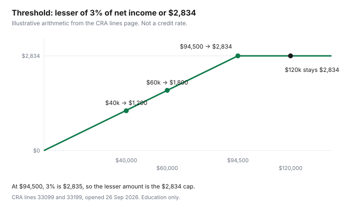

Healthcare · Canada
The Medical Expense Tax Credit in Canada: What Qualifies, the 3% Threshold, and How to Claim More
Households skip the medical expense tax credit because the bills feel ordinary: a filling, a pair of glasses, a year of prescriptions the plan did not pay. The Canada Revenue Agency lines page for 33099 and 33199, opened 26 Sep 2026, does not ask whether the year felt expensive. It asks you to total eligible amounts, then subtract the lesser of 3 percent of net income or $2,834. Below that line, the federal credit on this claim is zero. Above it, the excess is what the return uses. This page is the arithmetic for that one credit. It is education, not tax advice. The notice of assessment is the document that governs.
Disclosure: Tax software is an offer type. Saving Optimizer may later add partner links. We do not currently claim a software partnership. Education only — not tax advice. No named software picks.
Key takeaways
- For amounts tied to 2025 on the lines page, subtract the lesser of 3 percent of net income (line 23600) or $2,834. The same $2,834 cap applies on line 33199, measured against the dependant's net income.
- The opening rule is any 12-month period ending in 2025 that you did not claim in 2024. The CRA's worked example uses 1 July 2024 to 30 June 2025.
- The tax tip says to compare spouses. A lower net income produces a lower 3 percent threshold, so more of the same bills can sit above the line.
- Dental services, dentures and implants, prescription drugs, glasses, hearing aids, and premiums you pay to a private health services plan are on the eligible list. Whitening, gym fees, blood-pressure monitors, and employer-paid premiums that were not in your income are not.
- Do not mail the receipts with the return. Keep them. The credits checklist is the wider list of amounts. This page is only this credit.
How the credit works: expenses over the lesser of 3% of net income or $2,834 (2025)
Line 33099 is for you, your spouse or common-law partner, and your or your spouse's children who were under 18 at the end of the year. You enter the eligible total. On the line below, you enter the lesser of 3 percent of your net income on line 23600, or $2,834. You subtract that lesser amount from the total. What remains is the amount the federal calculation uses. The lines page opened on 26 Sep 2026 prints $2,834 for that step. It does not print a 2026 dollar on that page, so this guide does not add one.
The threshold is a hurdle, not a bill the CRA sends you. At $40,000 of net income, 3 percent is $1,200, and $1,200 is less than $2,834, so the hurdle is $1,200. At $60,000, 3 percent is $1,800. At $94,500, 3 percent is $2,835, which is one dollar over the cap, so the lesser amount is $2,834. At $120,000, 3 percent is $3,600, and the lesser amount is still $2,834. The cap binds once 3 percent of net income exceeds $2,834, which is net income above $94,466.67. That last figure is arithmetic from the CRA's $2,834, labelled as arithmetic, not a line on the return. The lines page does not state a federal credit percentage, and this guide does not invent one.
Claim only the part that you, or someone else, have not been and will not be reimbursed for. If a reimbursement is included in income, such as a benefit on a T4, and it was not deducted elsewhere on the return, the expense can still be claimed. A plan that pays the dentist directly means the credit sees what you paid, not the clinic's full invoice. The gap-coverage guide is where a private policy is compared with paying cash. The credit is what you do with the remainder.
| Net income (line 23600) | 3 percent | Lesser of 3 percent or $2,834 |
|---|---|---|
| $40,000 | $1,200 | $1,200 |
| $60,000 | $1,800 | $1,800 |
| $94,500 | $2,835 | $2,834 |
| $120,000 | $3,600 | $2,834 |

What qualifies: dental, glasses, prescriptions, hearing aids, travel medical premiums, and more
The common list on the lines page is not exhaustive. It marks each row as eligible or not, and it says whether you need a prescription, a certification in writing, or Form T2201. Dental services are eligible, and the prescription column is No. Dentures and dental implants are eligible, prescription No. Vision devices, including eyeglasses, contact lenses, and prescription swimming goggles, are eligible, and the prescription column is Yes. Hearing aids are eligible, prescription No. Prescription drugs and medications are eligible, prescription Yes. Premiums you pay to private health services plans are eligible, prescription No.
Travel medical insurance is not its own row on that list. Premiums you pay to a private health services plan are the row that can cover a private premium, including a travel medical policy when that policy is this kind of premium and you paid it. Provincial and territorial health-care plans and medical services plans are marked not eligible. Do not put an OHIP or MSP premium, if you pay one, on line 33099 because a travel policy was eligible. What a travel policy actually pays for a trip is the travel medical guide. This page only says which premium row the CRA list uses.
Rows marked not eligible on the same list include teeth whitening, described with other procedures done solely for cosmetic reasons, athletic or fitness club fees, blood pressure monitors, birth control devices that are non-prescription, and health plan premiums paid by an employer and not included in your income. An amount the employer paid, that never entered your income, is not your expense. An amount you paid into a health spending account, and that the account then reimbursed, is generally a reimbursement, so it is not claimed again. How those accounts elect and expire is the employer benefits guide.
| Item | Eligible? | Prescription needed? |
|---|---|---|
| Dental services | Eligible | No |
| Dentures and dental implants | Eligible | No |
| Teeth whitening | Not eligible | Not applicable |
| Vision devices (eyeglasses, contact lenses, prescription swimming goggles) | Eligible | Yes |
| Hearing aids | Eligible | No |
| Prescription drugs and medications | Eligible | Yes |
| Premiums paid to private health services plans | Eligible | No |
| Health plan premiums paid by an employer and not included in your income | Not eligible | Not applicable |
| Athletic or fitness club (gym) fees | Not eligible | Not applicable |
| Blood pressure monitors | Not eligible | Not applicable |
| Birth control devices (non-prescription) | Not eligible | Not applicable |
| Provincial and territorial health-care plans and medical services plans | Not eligible | Not applicable |
Choosing the best 12-month period and which spouse should claim
You can claim eligible expenses if you or your spouse or common-law partner paid them in any 12-month period ending in 2025, and you did not claim them in 2024. Generally you can claim amounts paid even if they were not paid in Canada. The period does not have to be the calendar year. A crown in August 2024 and a crown in May 2025 can sit in one window if that window ends in 2025 and you did not already claim the 2024 bill. The lines page's own example uses 1 July 2024 to 30 June 2025. Step 1 under line 33099 also says to enter the total paid in 2025. Both sentences are on the page. Use the 12-month rule in the opening section, and the example, and confirm the period on the return you file. This guide does not pick a winner between the two sentences.
The tax tip under line 33099 says to compare the amount you can claim with the amount your spouse or common-law partner could claim. It may be better for the spouse with the lower net income on line 23600. The reason is the 3 percent test, not a special rate. The CRA's example is Richard and Pauline. Their chosen period is 1 July 2024 to 30 June 2025. Richard's expenses are $2,500, Pauline's are $2,000, and their 16-year-old daughter's are $1,800. Because she is under 18, those three amounts combine to $6,300 on line 33099. Pauline's net income is $55,000. Three percent is $1,650, which is under $2,834, so she subtracts $1,650 from $6,300 and could claim $4,650. Richard's net income is $42,000. Three percent is $1,260, so he subtracts $1,260 from $6,300 and could claim $5,040. The page says it is better, in that case, for Richard to claim the expenses for himself, Pauline, and Jen. Those dollars are the CRA's example, not a household we observed.
A lower threshold is not the whole decision. The credit reduces tax on the return of the person who claims it. If the lower-income spouse has little tax to reduce, compare both returns before you move the claim. The refund guide is what to do with money the assessment actually pays, after the return is filed. Software that lets you toggle which spouse claims the medical line is an offer type. It is not a partnership, and this page does not name a product.
Claiming dependants on line 33199
Line 33199 is a separate calculation, done for each dependant. It is for children 18 or older at the end of the year, or grandchildren, and for parents, grandparents, brothers, sisters, uncles, aunts, nephews, or nieces who were residents of Canada at any time in the year and who depended on you for support. You add what you or your spouse paid for that person's eligible expenses. You subtract the lesser of 3 percent of that dependant's net income or $2,834. You enter the result on line 33199.
In the same CRA example, the 19-year-old son's expenses are $1,300. He is over 18, so those expenses are not folded into the parents' $6,300. They go on line 33199, and the parents repeat the calculation using his net income. A dependant with their own income can wipe out a small bill: 3 percent of their line 23600, capped at $2,834, comes off before anything is claimed. Children under 18 stay on line 33099 with the parents, which is why Jen's $1,800 was included and Rob's $1,300 was not.
The page says you have to do the calculation for each dependant. Do not add two adult children's expenses and run one threshold against a parent. Each dependant's net income is its own step 2.
Receipts CRA wants, and common rejections
Do not send documents with the tax return. Keep them in case the CRA asks. A receipt must show the name of the company or individual to whom the expense was paid. A card statement that says "clinic" does not meet that sentence. Where the list says a prescription is needed, a medical practitioner can provide it. Where the list says certification in writing, that is a separate note from a medical practitioner. Where the list says Form T2201, the disability tax credit certificate has to be approved, unless the person is already approved for the disability tax credit for 2025, in which case the page says you do not send a new T2201.
Claims fail the list in ordinary ways. The expense was reimbursed and the reimbursement was not included in income. The row is marked not eligible, which is whitening, a gym membership, a blood-pressure monitor, a non-prescription birth-control device, or a provincial health-plan premium. The prescription column says Yes and there is no prescription, which is the glasses row and the prescription-drug row. The same dollar was claimed in 2024 and again in a 12-month period that overlaps that claim. The person is an adult child and the amount was put on line 33099 instead of line 33199. None of these is a judgement about whether the care was useful. They are the columns on the list.
Dental work you still pay after a public plan is a candidate only for the unreimbursed part, and only if dental services are the row, which they are. How to get the quote before the chair is the quote guide. What the Canadian Dental Care Plan pays, and what it leaves you, is the CDCP guide. A co-pay you paid can be an eligible dental expense. The plan's share is a reimbursement, and you do not claim it.
Provincial medical credits on top of the federal one
Step 4 on the lines page says to claim the corresponding provincial or territorial tax credit on line 58689 of your Form 428. For other dependants, the matching line is 58729. If you live in Quebec, the page sends you to Revenu Québec instead of those lines. This guide did not open a provincial Form 428 schedule, so it does not print a provincial threshold, a provincial percentage, or an Ontario-only dollar. Use the form for the province or territory where you lived, and read line 58689 there.
Two related federal lines sit beside this credit and are not the same claim. The disability supports deduction, line 21500, can take some expenses that also qualify as medical expenses. The page says you can claim them on line 21500 or line 33099, or split them, as long as the total claimed is not more than the total paid. The refundable medical expense supplement, line 45200, is described as a refundable credit for working individuals with low incomes and high medical expenses. The lines page does not print a supplement dollar in the paragraph opened here, so none is copied. Read line 45200 before you assume the supplement applies.
The middle-aged credits checklist is employment amounts, donations, the caregiver amount, and the disability amount, plus a one-line mention of medical expenses. File this credit from the lines page and from Guide RC4065, not from that checklist. If a refund arrives, the job for the cash is on the refund guide, not a second medical claim.
Sources & date stamps
- Canada Revenue Agency, Lines 33099 and 33199, opened 26 Sep 2026. Twelve-month period ending in 2025, not claimed in 2024. Lesser of 3 percent of line 23600 or $2,834. Same cap on line 33199 against the dependant's net income. Lines 58689 and 58729. Quebec to Revenu Québec. Receipt rule. Common-list rows used in the table. Richard and Pauline example: 1 July 2024 to 30 June 2025, $6,300 combined for the under-18 claim, $4,650 versus $5,040.
- Canada Revenue Agency, Guide RC4065, Medical Expenses, 2025. Landing page title "RC4065 Medical Expenses - 2025 - Canada.ca", modified date on that landing page 20 Jan 2026. Opened 26 Sep 2026. The detailed list used above is the lines page, which points to this guide.
- No 2026 threshold was printed on the lines page opened for this article. No federal credit percentage was printed there either. Both are omitted.
Frequently asked questions
What medical expenses can I claim in Canada?
You can claim eligible expenses that you or your spouse or common-law partner paid, for the people named on line 33099 or line 33199, in any 12-month period ending in 2025 that you did not claim in 2024. The CRA list includes dental services, dentures and implants, prescription drugs, vision devices, hearing aids, and premiums you pay to a private health services plan. Teeth whitening, gym fees, blood pressure monitors, non-prescription birth control, and employer-paid premiums that were not included in your income are marked not eligible. Claim only the part that will not be reimbursed, unless that reimbursement is included in income and was not deducted elsewhere.
How does the 3% threshold work?
On line 33099 you enter the eligible total, then you subtract the lesser of 3 percent of your net income on line 23600 or $2,834. That $2,834 is the figure on the lines page for this calculation. At $40,000 of net income, 3 percent is $1,200, so the threshold is $1,200. At $120,000, 3 percent is $3,600, so the lesser amount is $2,834. The page opened on 26 Sep 2026 does not print a 2026 cap.
Which spouse should claim medical expenses?
The CRA tax tip says to compare what each spouse or common-law partner could claim. It may be better for the person with the lower net income on line 23600, because 3 percent of a lower income is a lower threshold. In the CRA's example, the spouse at $42,000 could claim $5,040 of a shared $6,300, and the spouse at $55,000 could claim $4,650. Compare both returns before you choose. This is not a filing instruction.
Can I choose any 12-month period?
The lines page says you can use any 12-month period ending in 2025 if those expenses were not claimed in 2024. The worked example on that page uses 1 July 2024 to 30 June 2025. You do not have to use the calendar year if a different 12-month window ending in 2025 puts more eligible, unreimbursed costs above the threshold. Do not reuse a period you already claimed.
Do I need receipts when I file?
Do not send receipts with the return. Keep them in case the CRA asks later. A receipt has to show the name of the company or individual you paid. If the list says a prescription is needed, a medical practitioner provides it. Certification in writing and Form T2201 are separate documents when the list calls for them.